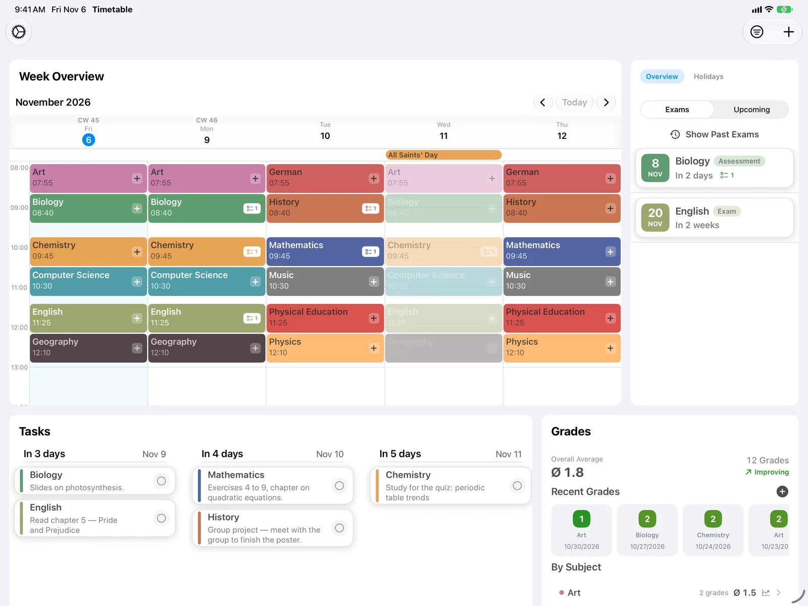

Tu semana de clases. Por fin bajo control.
Horario, deberes, exámenes y notas en una sola app. Comparte deberes y exámenes con tus amigos.



Horario, deberes, exámenes y notas en una sola app. Comparte deberes y exámenes con tus amigos.

Marca tus asignaturas en una lista ya preparada, con nombre y color. Después, indica una sola vez las horas de cada asignatura. ¿Alguien de tu clase ya tiene el horario? Importa su archivo y estarás listo en segundos.

Deberes y exámenes, ordenados por fecha de entrega. Crea un grupo con tus amigos y compartidlo por iCloud: si alguien añade los deberes de mates, aparecen al instante en el dispositivo de todos.

Ponderación, medias por asignatura y general, y gráfico de evolución. Escanea el examen corregido y guárdalo junto a la nota.

Elige uno de los temas incluidos o diseña el tuyo.

Widgets para tu día, tu próxima clase, tus tareas y tus notas.

Un panel libre: organiza tu horario, tareas y notas como quieras.
Timetable Manager es una app independiente. Pasé mucho tiempo buscando la app de horarios perfecta, pero en todas partes me molestaba que las funciones pro estuvieran tras un muro de pago. Así que en los últimos tres años creé la mía.
Si te gusta la app, me alegraría mucho que me invitaras a un café en Ko-fi. Me ayuda a seguir mejorándola.
Support me on Ko-fi